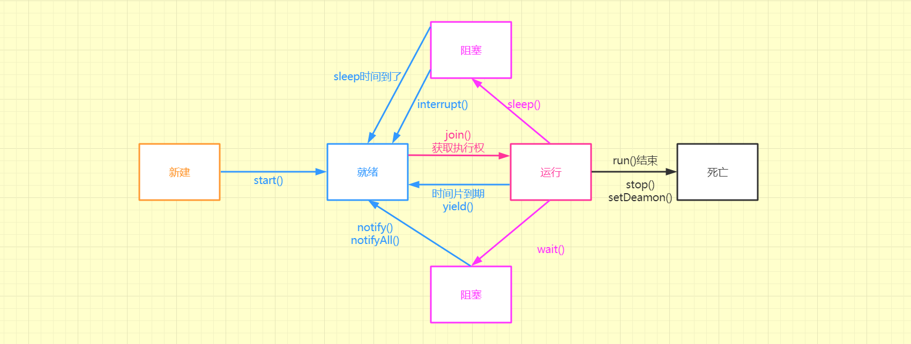
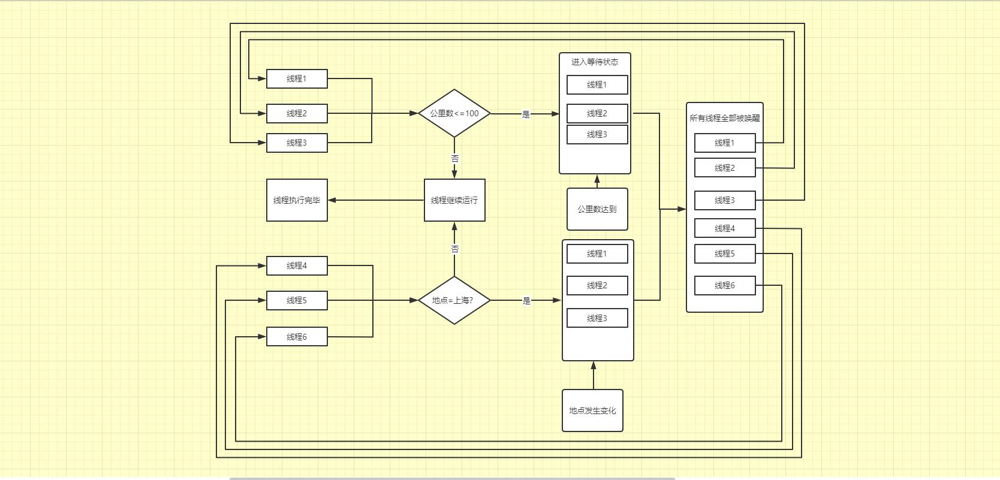
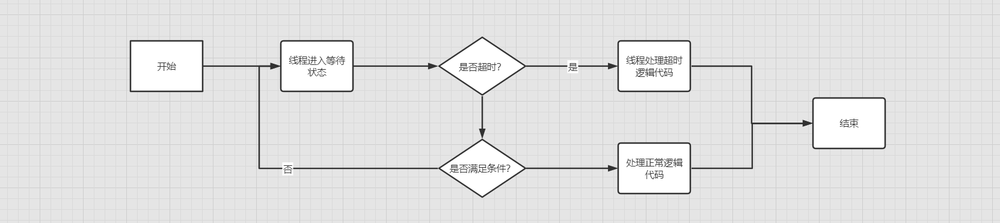

不要因为没有掌声而丢掉自己的梦想
线程基础、线程之间的共享和协作
1、线程与操作系统之间的关系
线程与CPU核心数之间的关系
CPU核心数和线程数最早是
1:1的关系，但是在Intel公司引入超线程技术之后，CPU核心数和线程数之间的关系达到了1:2。CPU的线程调度机制
CPU调度线程采用的时间片轮转机制（Round-Robin,RR）。为了实现轮转调度，系统把所有就绪进程按先入先出的原则排成一个队列。新来的进程加到就绪队列末尾。每当执行进程调度时，进程调度程序总是选出就绪队列的队首进程，让它在CPU上运行一个时间片的时间。时间片是一个小的时间单位，通常为10~100ms数量级。当进程用完分给它的时间片后，系统的计时器发出时钟中断，调度程序便停止该进程的运行，把它放入就绪队列的末尾；然后，把CPU分给就绪队列的队首进程，同样也让它运行一个时间片，如此往复。
进程与线程
进程：程序运行资源分配的最小单位，进程内部有多个线程，多个线程之间共享这个进程的资源。进程与进程之间是相互独立的。
线程：CPU调度的最小单位。
并行和并发
并行：在同一时刻，有多条指令在多个处理器上同时执行；
并发：在同一时刻只能有一条指令执行，但多个进程指令被快速的轮换执行。
2、Java中的多线程
在Java里的程序天生就是多线程的。
package org.example.pojo.threads;
import java.lang.management.ManagementFactory;
import java.lang.management.ThreadInfo;
import java.lang.management.ThreadMXBean;
/**
* @program:Threads
* @description:测试Java程序的多线程性
* @author:Mr.Pan
* @create:2020-12-01 15:15:48
*/
public class OnlyMain {
public static void main(String[] args) {
// 虚拟机线程管理接口
ThreadMXBean threadMXBean= ManagementFactory.getThreadMXBean();
ThreadInfo[] threadInfos= threadMXBean.dumpAllThreads(false,false);
for (ThreadInfo threadInfo:threadInfos){
System.out.println("["+threadInfo.getThreadId()+"]"+" "+threadInfo.getThreadName());
}
}
}
仅仅是上述的代码，利用虚拟机的线程管理接口TheradMXBean接口来查看，执行上述的main()方法时，虚拟机启动了多少个线程。
[6] Monitor Ctrl-Break
[5] Attach Listener
[4] Signal Dispatcher
[3] Finalizer
[2] Reference Handler
[1] main虚拟机一共启动了5个线程（Monitor Ctrl-Break是Intelij IDEA编辑器启动的一个线程），其中main线程是程序的入口，Reference Handler线程是负责清除引用的线程，Finalizer线程就是用来执行对象的finalize方法的线程，Signal Dispatcher线程专门分发处理给虚拟机信号的线程，Attach Listener获取当前程序运行的一些信息。
创建线程的方式
在Java中创建线程一共有三种方式：
- 继承
Thread类，重写run()方法。 - 实现
Runable接口，实现run()方法。 - 实现
Callable接口，实现call()方法。
package org.example.pojo.threads;
import org.junit.internal.runners.statements.RunAfters;
import java.lang.management.ManagementFactory;
import java.lang.management.ThreadInfo;
import java.lang.management.ThreadMXBean;
import java.util.concurrent.Callable;
/**
* @program:Threads
* @description:测试Java程序的多线程性
* @author:Mr.Pan
* @create:2020-12-01 15:15:48
*/
public class OnlyMain {
private class UserThread implements Runnable{
@Override
public void run() {
System.out.println("I am implements Runnable");
}
}
private class UserThread1 implements Callable{
@Override
public Object call() throws Exception {
System.out.println("I am implements Callable");
return "CallResult";
}
}
private class UserThread2 extends Thread{
@Override
public void run() {
System.out.println("I am extends Thread");
}
}
public static void main(String[] args) {
//Runnable接口的使用方式
UserThread userThread = new UserThread();
new Thread(userThread).start();
//Callable接口的使用方式
UserThread1 userThread1 = new UserThread1();
FutureTask<Object> futureTask = new FutureTask<>(userThread1);
new Thread(futureTask).start();
//Callable接口获取返回值的方式，会抛出异常ExecutionException，InterruptedException
futureTask.get();
}
}
实现Runable和实现Callable接口的区别就在于：前者是没有返回值，而后者允许存在返回值。使用Runable接口的时候可以直接将其放入Thread类中，构建成一个线程；而使用Callable接口的时候需要先将接口转为FutureTask类，因为Thread类不支持Callable类型的构造函数。
Java已经提供可以一个Thread类了，还继续提供接口的原因是，Java语言只有单继承，但是可以多实现。
线程的停止方式
线程停止方式有自然停止和人为停止两种。第一种自然停止的意思就是线程的run()方法执行完毕或者在执行的过程中抛出异常；第二种就是程序员在使用Thread类中的方法停止线程；
在Thread类中提供了interrupt() isInterrupted static interrupted()方法。
interrupt()中断一个线程，并不是强行关闭这个线程，是否终止由该线程自己决定。如果是，就将中断标志位置为true。isInterrupted()判断一个线程是否是处于中断状态static interrupted()判断当前线程是否处于中断状态。如果是，就将中断标志位置为true。
package org.example.pojo.threads;
import org.junit.Test;
import org.junit.internal.runners.statements.RunAfters;
import java.lang.management.ManagementFactory;
import java.lang.management.ThreadInfo;
import java.lang.management.ThreadMXBean;
import java.util.concurrent.Callable;
import java.util.concurrent.ExecutionException;
import java.util.concurrent.FutureTask;
/**
* @program:Threads
* @description:测试Java程序的多线程性
* @author:Mr.Pan
* @create:2020-12-01 15:15:48
*/
public class OnlyMain {
private static class UserThread extends Thread {
@Override
public void run() {
try {
while (true){
System.out.println(Thread.currentThread().getName()+"线程正在运行");
if (isInterrupted()){throw new InterruptedException();}
}
} catch (InterruptedException e) {
System.out.println(Thread.currentThread().getName()+"线程已停止，标志位："+isInterrupted());
e.printStackTrace();
}
}
}
public static void main(String[] args) throws ExecutionException, InterruptedException {
UserThread userThread = new UserThread();
userThread.setName("UserThread");
userThread.start();
Thread.sleep(1);
userThread.interrupt();
}
}
上述代码中通过interrupt()方法为线程thread设置中断状态，通过isInterrupted()方法查看thread线程是否是中止状态。在线程中通过static interrupted()方法判断自己的中断状态是不是为false，如果是为false，就表示被设置了中断状态，然后利用抛出异常的方式中止线程。
UserThread线程正在运行
UserThread线程正在运行
UserThread线程已停止，标志位：true
java.lang.InterruptedException
at org.example.pojo.threads.OnlyMain$UserThread.run(OnlyMain.java:27)其实从代码来看，线程并没有中止，只是跳转到了catch代码块中，不再执行业务代码，达到中止的效果。但是线程并没有中止。
也可以通过while轮询的方式来中止线程：
private static class UserThread implements Runnable {
@Override
public void run() {
while (!Thread.interrupted()) {
System.out.println("线程正常运行");
}
System.out.println("线程中止了");
}
}如果一个方法会抛出
InterruptExeception异常，将会让中断标志位复位。即不可以去中止Sleep状态下的线程。
线程的常用方法以及线程状态之间的转换：

- 新建 指的是线程被
new出来，但是并没有调用start()方法的状态。 - 就绪 指的是线程进入可以执行的状态，具体执行还是未执行需要CPU的时间片调度算法来决定
- 新建状态的线程通过调用
start()方法可以使线程进入就绪状态 - 阻塞状态的线程在
sleep()方法的时间到了的时候会重新进入就绪状态 - 处于运行状态的线程因为CPU分配的时间片用完了，由运行状态进入就绪状态，等待CPU的下一次分配
- 处于阻塞状态的线程调用了
interrupt()（Slepp状态下调用interrupt()方法会重置中断标志位）让阻塞状态的线程唤醒，进入就绪状态 - 处于阻塞状态的线程在
wait()/notify机制下被notify()notifyAll()唤醒进入就绪状态 - 处于运行状态的线程调用
yield()方法放弃了CPU分配的时间片，使得线程进入就绪状态
- 新建状态的线程通过调用
- 运行 指的是就绪状态的线程获得了CPU分配的时间片开始执行
- 就绪状态的线程在获得CPU分配的时间片，进入运行状态
- 就绪状态的线程调用
join()方法，进入运行状态
- 阻塞 指的是线程在运行状态的时候，因为某些条件的问题，进入等待唤醒的状态
- 在运行状态的线程调用
wait()sleep()会让方法进入阻塞状态，当条件满足重新唤醒的时候，会让线程进入就绪状态等待CPU分配时间片。
- 在运行状态的线程调用
- 死亡 指的是线程结束被销毁
- 线程的正常执行完
run()方法，线程执行完毕被销毁。 - 线程被暴力停止调用了
stop() - 线程抛出异常无法继续执行
- 线程的正常执行完
run()和start()
调用线程的run()方法是直接调用，是当做普通方法调用，并没有启动额外的线程；调用start()方法的时候启动线程，让启动的子线程去调用run()方法。
线程的优先级
通过调用userThread.setPriority(3);来设置线程的优先级，但是并不意味着CPU会按照你的想法来，最后还是需要看CPU的调度算法。优先级的取值范围是1~10，默认是5。
守护线程
守护线程是与主线程同生共死的，当主线程运行结束的时候，守护线程会直接结束。
package org.example.pojo.threads;
import org.junit.Test;
import org.junit.internal.runners.statements.RunAfters;
import java.lang.management.ManagementFactory;
import java.lang.management.ThreadInfo;
import java.lang.management.ThreadMXBean;
import java.util.concurrent.Callable;
import java.util.concurrent.ExecutionException;
import java.util.concurrent.FutureTask;
/**
* @program:Threads
* @description:测试Java程序的多线程性
* @author:Mr.Pan
* @create:2020-12-01 15:15:48
*/
public class OnlyMain {
private static class UserAble implements Runnable{
@Override
public void run() {
while (!Thread.currentThread().isInterrupted()){
System.out.println(Thread.currentThread().getName());
}
System.out.println(Thread.currentThread().getName()+"标志位是"+Thread.currentThread().isInterrupted());
}
}
public static void main(String[] args) throws ExecutionException, InterruptedException {
UserAble userAble=new UserAble();
Thread userThread=new Thread(userAble,"UserAble");
//userThread.setDaemon(true);
userThread.start();
Thread.sleep(1);
userThread.interrupt();
System.out.println(Thread.currentThread().getName()+"已经执行完毕");
}
}
上述代码执行完毕的执行结果是：
UserAble
UserAble
UserAble
UserAble
UserAble
main已经执行完毕
UserAble标志位是true是正常的执行，在主线程执行完毕的时候子线程还在继续执行。当把上述代码中userThread.setDaemon(true)表示将userThread线程设置为守护线程取消注释，然后将userThread.interrupt()注释掉，让userThread与main线程一起结束。输出结果如下：
UserAble
UserAble
UserAble
UserAble
UserAble
UserAble
UserAble
UserAble
main已经执行完毕可以看到只有main线程执行完毕，守护线程就直接结束了，这就意味着线程在守护线程中的finally语句块也是不一定能够得到执行的。
3、线程间的共享
在多线程编程中，线程之间并不是独立的，需要多个线程一起协作一起完成一项任务。这是就会出现多个线程访问内存中的同一个区域，如何保证数据的正确性，这就是多线程编程的核心。而实现同步的方式主要有Synchronized关键字、volatile关键字、ThreadLocal的使用三种。
synchronized关键字
synchronized可以修饰方法，当它修饰普通方法的时候称之为对象锁；当它修饰静态方法的时候称之为类锁。
创建一个测试类：
package org.example.pojo.threads;
/**
* @program:Threads
* @description:测试Synchronized关键字
* @author:Mr.Pan
* @create:2020-12-01 20:20:28
*/
public class SynClassAndInst {
//创建了一持有类锁的线程
private static class SynClass extends Thread {
@Override
public void run() {
System.out.println("TestClass is running...");
synClass();
}
}
//创建一个能拥有对象锁的线程
private static class InstanceSyn implements Runnable {
private SynClassAndInst synClassAndInst;
public InstanceSyn(SynClassAndInst synClassAndInst) {
this.synClassAndInst = synClassAndInst;
}
@Override
public void run() {
System.out.println("TestInstance is running..." + synClassAndInst);
synClassAndInst.instance();
}
}
// 创建一个能够拥有对象锁的线程
private static class Instance2Syn implements Runnable {
private SynClassAndInst synClassAndInst;
public Instance2Syn(SynClassAndInst synClassAndInst) {
this.synClassAndInst = synClassAndInst;
}
@Override
public void run() {
System.out.println("TestInstance2 is running..." + synClassAndInst);
synClassAndInst.instance2();
}
}
// 创建两个同步方法，对像锁
private synchronized void instance() {
try {
System.out.println("synInstance is going ..." + this.toString());
Thread.sleep(1000);
System.out.println("synInstance is ended ..." + this.toString());
} catch (InterruptedException e) {
e.printStackTrace();
}
}
private synchronized void instance2() {
try {
System.out.println("synInstance2 is going ..." + this.toString());
Thread.sleep(1000);
System.out.println("synInstance2 is ended ..." + this.toString());
} catch (InterruptedException e) {
e.printStackTrace();
}
}
//创建一个类锁
private static synchronized void synClass() {
try {
System.out.println("synInstance3 is going ...");
Thread.sleep(1000);
System.out.println("synInstance3 is ended ...");
} catch (InterruptedException e) {
e.printStackTrace();
}
}
}
上述代码中创建了两个线程InstanceSyn和Instance2Syn，两个线程分别调用类中的两个synchronized的普通方法（对象锁），还创建一个类锁和一个普通的静态方法。
测试：持有不同对象锁的两个线程之间的工作情况
public static void main(String[] args) throws InterruptedException {
//创建两个对象
SynClassAndInst synClassAndInst = new SynClassAndInst();
SynClassAndInst synClassAndInst2 = new SynClassAndInst();
//分别让两个线程持有不同的对象锁
Thread t1 = new Thread(new InstanceSyn(synClassAndInst));
Thread t2 = new Thread(new Instance2Syn(synClassAndInst2));
t1.start();
t2.start();
Thread.sleep(1000);
}输出结果为：
TestInstance is running...org.example.pojo.threads.SynClassAndInst@1c3d736f
synInstance is going ...org.example.pojo.threads.SynClassAndInst@1c3d736f
TestInstance2 is running...org.example.pojo.threads.SynClassAndInst@36bdb2aa
synInstance2 is going ...org.example.pojo.threads.SynClassAndInst@36bdb2aa
synInstance is ended ...org.example.pojo.threads.SynClassAndInst@1c3d736f
synInstance2 is ended ...org.example.pojo.threads.SynClassAndInst@36bdb2aa结论：当持有不同对象锁的两个线程之间是不会阻塞情况的，是可以同时进行的。
测试：持有相同对象锁的两个线程之间的工作情况
public static void main(String[] args) throws InterruptedException {
//创建一个对象
SynClassAndInst synClassAndInst = new SynClassAndInst();
//分别让两个线程持有相同的对象锁
Thread t1 = new Thread(new InstanceSyn(synClassAndInst));
Thread t2 = new Thread(new Instance2Syn(synClassAndInst));
t1.start();
t2.start();
Thread.sleep(1000);
}}输出结果：
TestInstance is running...org.example.pojo.threads.SynClassAndInst@3c81615
TestInstance2 is running...org.example.pojo.threads.SynClassAndInst@3c81615
synInstance is going ...org.example.pojo.threads.SynClassAndInst@3c81615
synInstance is ended ...org.example.pojo.threads.SynClassAndInst@3c81615
synInstance2 is going ...org.example.pojo.threads.SynClassAndInst@3c81615
synInstance2 is ended ...org.example.pojo.threads.SynClassAndInst@3c81615上述输出结果中，在执行到被synchronized的修饰两个普通方法的时候，线程t1先获得了这个对象锁，所以必须等到t1完成了instance()方法的调用，线程t2才可以去调用instance2()方法。
结论：持有相同对象锁的两个线程，必须等待先获得对象锁的线程执行完毕，下一个线程才能执行。
测试：分别持有对象锁和类锁的两个线程之间的工作情况
public static void main(String[] args) throws InterruptedException {
//创建两个线程分别持有类锁和对象锁
SynClassAndInst synClassAndInst = new SynClassAndInst();
Thread t1 = new Thread(new InstanceSyn(synClassAndInst));
SynClass synClass=new SynClass();
t1.start();
synClass.start();
Thread.sleep(1000);
}输出结果：
TestInstance is running...org.example.pojo.threads.SynClassAndInst@11cfa6bb
TestClass is running...
synInstance is going ...org.example.pojo.threads.SynClassAndInst@11cfa6bb
synInstance3 is going ...
synInstance3 is ended ...
synInstance is ended ...org.example.pojo.threads.SynClassAndInst@11cfa6bb从输出结果中可以看到，线程t1和synClass线程之间是同时进行的，没有出现阻塞线程。
结论：持有类锁的线程和持有对象锁的两个线程之间可以同时进行
测试：持有同一个类锁的两个线程之间的运行情况
public static void main(String[] args) throws InterruptedException {
SynClass synClass = new SynClass();
SynClass synClass1 = new SynClass();
synClass.start();
synClass1.start();
Thread.sleep(1000);
}输出结果为：
TestClass is running...
TestClass is running...
synInstance3 is going ...
synInstance3 is ended ...
synInstance3 is going ...
synInstance3 is ended ...线程synClass和线程synClass1之间存在竞争关系，必须等到先获得类锁的线程执行完毕，下一个线程才可以获得类锁继续执行。
结论：持有同一个类的类锁的两个线程之间，必须等到先获得类锁的线程执行完毕，下一条线程在可以获得类锁继续执行。
其实
synchronized关键字锁的都是对象，只是在对象锁中它锁的是new出来的对象实例，而类锁中它锁的是虚拟机中Class对象，而虚拟机保证Class对象在虚拟机唯一，所以只要是同一个类的类锁其实都是同一把锁。
volatile关键字
volatile是最轻量的同步机制，它由虚拟机提供，要求每次对这个变量的读写都需要同步到主内存中，所有访问它的Java线程都会在主内存中获取这个变量。但是volatile只能保证可见性，无法保证原子性。
当只有一个线程写，多个线程读的时候，是volatile关键字最常用的场景。
ThreadLocal类
ThreadLocal提供了线程的局部变量，每个线程都可以通过set()和get()来对这个局部变量进行操作，但不会和其他线程的局部变量进行冲突。
package org.example.pojo.threads;
/**
* @program:Threads
* @description:测试ThreadLocal
* @author:Mr.Pan
* @create:2020-12-02 10:10:29
*/
public class UseThreadLocal {
//创建一个ThreadLocal对象，在里面存储一个初始值为1的变量
static ThreadLocal<Integer> threadLocal=new ThreadLocal<Integer>(){
@Override
protected Integer initialValue() {
return 1;
}
};
public void startThreadArray(){
Thread[] threads=new Thread[3];
for (int i = 0; i <3 ; i++) {
threads[i]=new Thread(new TestThread(i));
}
for (int i = 0; i <3 ; i++) {
threads[i].start();
}
}
//创建三个线程，分别对ThreadLocal中存入的对象进行操作，观察结果之间是否存在互相影响
private static class TestThread implements Runnable{
int id;
public TestThread(Integer id){
this.id=id;
}
@Override
public void run() {
System.out.println(Thread.currentThread().getName()+":start");
Integer s=threadLocal.get();
s=s+id;
threadLocal.set(s);
System.out.println(Thread.currentThread().getName()+":"+threadLocal.get());
}
}
public static void main(String[] args) {
UseThreadLocal useThreadLocal=new UseThreadLocal();
useThreadLocal.startThreadArray();
}
}
输出结果为：
Thread-0:start
Thread-2:start
Thread-1:start
Thread-1:2
Thread-2:3
Thread-0:1三个线程之间的操作ThreadLocal之间是互不影响的，其实观察ThreadLocal的实现，可以简单的理解为ThreadLocal就是一个Map<Thread,Object>的对象，每次get或者是set都是需要Thread作为key，去操作对应的Thread在ThreadLocal里面的副本值。
ThreadLocal最常用的场景就是连接池，在连接池中，让每一个连接都保持独立。但是由于为每一个线程维护一个副本，当副本是一个复杂的、庞大的类的时候，就会容易造成内存的消耗。
4、线程间的协作
在大多时候我们需要多个线程之间进行相互协作，来完成某一项工作。例如，需要线程A去做某一件事，但是线程B必须等待线程A将这个事情做完，才能继续做自己的事情。最常规的就是采用轮询的机制，线程B每隔一段时间就去查询线程A是不是将这个事情做完了，这样导致线程B一直在运行在消耗系统资源的同时，有时候也会对线程A的执行效率产生影响。假如有一种更好的机制，在线程A没有运行完的时候，线程B一致处于等待状态，这样就可以减少系统资源的消耗。这就是常说的等待/通知机制。
wait/notify机制
调用wait()方法称之为等待方，调用notify()称之为通知方。
等待和通知的标准范式
等待方：
- 获取对象的锁
- 循环判断条件是否满足，不满足调用wait方法
- 条件满足执行业务逻辑
通知方：
- 获取对象的锁
- 改变条件
- 通知所有等待在对象的线程
创建一个快递实体类，当快递的地点发生变化的时候，就想用户发送消息；当快递的公里数发生变化的时候，就像用户发送消息。
package org.example.pojo;
import lombok.AllArgsConstructor;
import lombok.Data;
import lombok.NoArgsConstructor;
/**
* @program:Threads
* @description:创建一个快递实体类
* @author:Mr.Pan
* @create:2020-12-03 09:9:43
*/
@NoArgsConstructor
@AllArgsConstructor
public class Express {
public final static String CITY = "ShangHai";
private int km;//快递运输的里程数
private String site;//快递到达的地点
/*变化公里数，然后通知处于wait状态并需要处理公里数的线程进行业务处理*/
public synchronized void changeKm() {
this.km = 101;
notifyAll();
}
/*变化地点，然后通知处于wait状态并需要处理地点的线程进行业务处理*/
public synchronized void changeSite() {
this.site = "BeiJin";
notifyAll();
}
public synchronized void waitKm() {
try {
while (this.km <= 100) {
wait();
System.out.println("检测公里数线程[" + Thread.currentThread().getName() + "] 被唤醒");
}
System.out.println("您的快递已经运输了" + this.km + "千米，请您注意查收！");
} catch (InterruptedException e) {
e.printStackTrace();
}
}
public synchronized void waitSite() {
try {
while (CITY.equals(this.site)) {
wait();
System.out.println("检查地点线程[" + Thread.currentThread().getName() + "] 被唤醒");
}
System.out.println("您的快递已到达" + this.site + ", 请您注意查收！");
} catch (InterruptedException e) {
e.printStackTrace();
}
}
}
然后创建线程，利用多线程完成这个任务：
package org.example.threads;
import org.example.pojo.Express;
/**
* @program:Threads
* @description:wait/notify机制
* @author:Mr.Pan
* @create:2020-12-03 09:9:42
*/
public class WaitNotify {
private static Express express=new Express(0,Express.CITY);
private static class CheckKm extends Thread{
@Override
public void run() {
express.waitKm();
}
}
private static class CheckSite extends Thread{
@Override
public void run() {
express.waitSite();
}
}
public static void main(String[] args) throws InterruptedException {
for (int i = 0; i <3 ; i++) {
Thread t= new CheckKm();
t.setName("CheckKmThread"+i);
t.start();
}
for (int i = 0; i < 3; i++) {
Thread t= new CheckSite();
t.setName("CheckSiteThread"+i);
t.start();
}
Thread.sleep(1000);
express.changeKm();
}
}
上述代码的输出结果为：
检查地点线程[CheckSiteThread2] 被唤醒
检查地点线程[CheckSiteThread0] 被唤醒
检查地点线程[CheckSiteThread1] 被唤醒
检测公里数线程[CheckKmThread2] 被唤醒
您的快递已经运输了101千米，请您注意查收！
检测公里数线程[CheckKmThread1] 被唤醒
您的快递已经运输了101千米，请您注意查收！
检测公里数线程[CheckKmThread0] 被唤醒
您的快递已经运输了101千米，请您注意查收！从输出结果可以很容易看到，wait()/notifyAll()机制会唤醒所有的线程，无论这线程是监测地点的还是监测公里数的，都会被唤醒执行一次。因为只是改变了公里数，所以监测地点的线程发现地点并没有发生变化所以再次进入休眠状态，而监测公里数的线程发现公里数发生变化之后就提醒用户，公里数发生了变化。
利用线程管理类ThreadMXBean查看存活的线程：
ThreadMXBean threadMXBean= ManagementFactory.getThreadMXBean();
ThreadInfo[] threadInfos= threadMXBean.dumpAllThreads(false,false);
for (ThreadInfo threadInfo:threadInfos){
System.out.println("["+threadInfo.getThreadId()+"]"+" "+threadInfo.getThreadName());
}输出为：
[17] CheckSiteThread2
[16] CheckSiteThread1
[15] CheckSiteThread0
[6] Monitor Ctrl-Break
[5] Attach Listener
[4] Signal Dispatcher
[3] Finalizer
[2] Reference Handler
[1] main可以看到监测公里数的线程已经不存在，已经执行完毕，被销毁掉了。但是因为地点仍然没有发生变化，所以监测地点的线程仍然存在。
wait()/notifyAll()执行机制图：

在实际的应用开发中其实是notifyAll()用的更多的，notify()有可能使得所有的线程都进入休眠。在上述例子中，假如将notifyAll()改为notify()会出现所有线程都休眠的状态，即使公里数发生了变化，检测公里数的线程也无法获得这个信息导致一直在休眠，而检测地点的线程因为地点没有发生变化将继续休眠，最终所有的线程都在休眠。
wait()/notify()机制

notify()会唤醒一个线程，具体唤醒哪个线程是由操作系统来决定的。公里数发生变化的时候，假如唤醒的是检测公里数的线程，那么线程将正常执行wait/notify机制；但是假如唤醒的是检测地点的线程，此时公里数发生变化的信息就无法传到检测公里数的线程中，此时检测公里数的线程就依旧处于休眠状态，而此时唤醒的检测地点的线程，在执行一遍发现地点没有改变的时候，再次进入休眠。此时所有的线程都进入了休眠。这就是notify()机制存在的问题。
在实际编程中应该尽量使用notifyAll机制。
等待超时模式
在上述代码中，假如条件始终没有满足，所有的线程会无限期的等待下去。在实际应用过程中，其实并不是这样，我们更喜欢它不光是等待了能处理相应的逻辑，没有等待到信息也可以进行相应的处理逻辑。
等待超时模式的范式：
long overtime=now +T;
long remain=T;
while(result 不满足条件&&remain>0){
wait(remain);
reamain=overtime-now;
}
return result;假设现在时间为now，等待时间为T，就以为这到了overtime时，还没有唤醒，这线程就需要自动唤醒然后执行下面的逻辑完成所有的任务。
上述代码中假设检测公里数的线程等待3s，超过3s之后就报超时：
public synchronized void waitKm() {
try {
long overtime=new Date().getTime()+3000;
long remain=3000;
while (this.km <= 100 &&remain>0) {
wait(remain);
System.out.println("线程["+Thread.currentThread().getName()+"]超时");
System.out.println("检测公里数线程[" + Thread.currentThread().getName() + "] 被唤醒");
remain=overtime-new Date().getTime();
}
System.out.println("您的快递已经运输了" + this.km + "千米，请您注意查收！");
} catch (InterruptedException e) {
e.printStackTrace();
}
}然后执行主方法中的代码，输出结果为：
public static void main(String[] args) throws InterruptedException {
for (int i = 0; i <3 ; i++) {
Thread t= new CheckKm();
t.setName("CheckKmThread"+i);
t.start();
}
Thread.sleep(1000);
express.changeKm(85);
Thread.sleep(1000);
express.changeKm(85);
Thread.sleep(3000);
ThreadMXBean threadMXBean= ManagementFactory.getThreadMXBean();
ThreadInfo[] threadInfos= threadMXBean.dumpAllThreads(false,false);
for (ThreadInfo threadInfo:threadInfos){
System.out.println("["+threadInfo.getThreadId()+"]"+" "+threadInfo.getThreadName());
}
}检测公里数线程[CheckKmThread1] 被唤醒,剩余等待时间为：3000
检测公里数线程[CheckKmThread2] 被唤醒,剩余等待时间为：3000
检测公里数线程[CheckKmThread0] 被唤醒,剩余等待时间为：3000
检测公里数线程[CheckKmThread0] 被唤醒,剩余等待时间为：1995
检测公里数线程[CheckKmThread2] 被唤醒,剩余等待时间为：1995
检测公里数线程[CheckKmThread1] 被唤醒,剩余等待时间为：1995
检测公里数线程[CheckKmThread1] 被唤醒,剩余等待时间为：986
线程[CheckKmThread1]超时
检测公里数线程[CheckKmThread2] 被唤醒,剩余等待时间为：986
线程[CheckKmThread2]超时
检测公里数线程[CheckKmThread0] 被唤醒,剩余等待时间为：986
线程[CheckKmThread0]超时
[6] Monitor Ctrl-Break
[5] Attach Listener
[4] Signal Dispatcher
[3] Finalizer
[2] Reference Handler
[1] main从上述结果可以看到，虽然每次检测公里数的线程被唤醒，但是发现公里数并没有达到要求，然后将继续等待下一次唤醒。当超过时间之后，从ThreadMXBean可以看出，线程会自动销毁。
等待超时机制流程图：

5、join()方法
join()方法是指，线程A调用了线程B的该方法时，只有当线程B执行完毕了，线程A才可以继续执行。
package org.example.threads;
/**
* @program:Threads
* @description:测试join()方法
* @author:Mr.Pan
* @create:2020-12-03 15:15:17
*/
public class UseJoin {
static class JumpQueue implements Runnable{
private Thread thread;
public JumpQueue(Thread thread){
this.thread=thread;
}
@Override
public void run() {
try {
thread.join();
} catch (InterruptedException e) {
e.printStackTrace();
}
System.out.println(Thread.currentThread().getName()+" terminated.");
}
}
public static void main(String[] args) throws InterruptedException {
Thread previous=Thread.currentThread();
for (int i = 0; i <3 ; i++) {
Thread thread=new Thread(new JumpQueue(previous),String.valueOf(i));
System.out.println(previous.getName()+" jump a queue the thread:"+thread.getName());
thread.start();
previous=thread;
}
Thread.sleep(2000);
System.out.println(Thread.currentThread().getName()+" terminated.");
}
}
上述代码输出结果为：
main jump a queue the thread:0
0 jump a queue the thread:1
1 jump a queue the thread:2
main terminated.
0 terminated.
1 terminated.
2 terminated.可以看到是创建了三个线程，每个线程调用前面一个线程的join()方法，这就意味着第三个线程必须等到所有的线程执行完毕，第三个线程才能继续执行自己的事情。从后半段的输出可以看到前面两个线程结束之后，第三个线程才会结束。
6、常用方法对锁的影响
一般涉及到与锁有关系的方法有sleep() yield() notify()/notifyAll() wait()
sleep()执行之后锁是不会释放的wait()调用之前是必须持有锁的，调用之后，锁会被释放，当wait方法返回的时候，当前线程会重新持有锁yield()执行之后锁是不会释放的notify()/notifyAll()调用之前必须持有锁，调用该方法是本身不会释放锁的
转载请注明来源，欢迎对文章中的引用来源进行考证，欢迎指出任何有错误或不够清晰的表达。可以在下面评论区评论，也可以邮件至 1920734752@qq.com